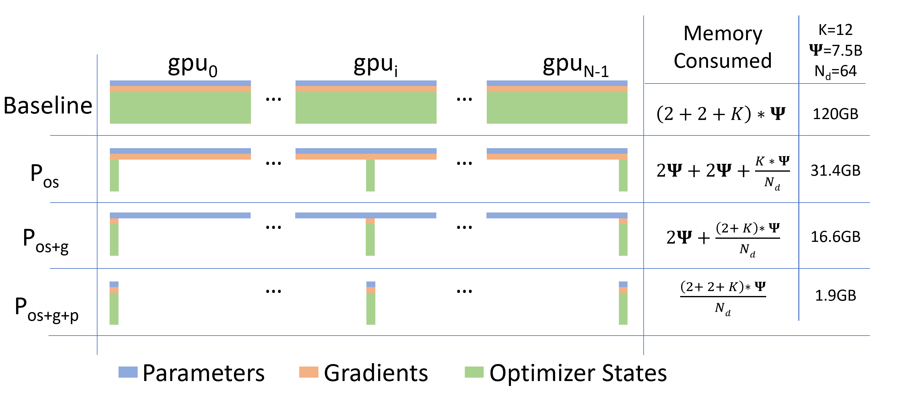
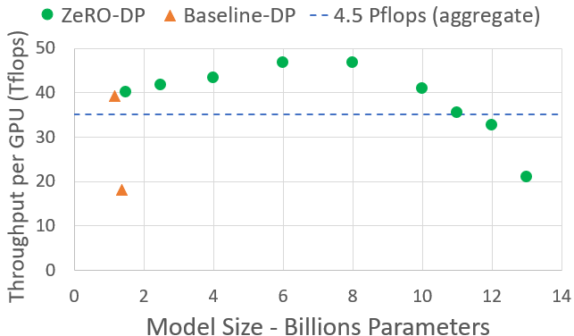
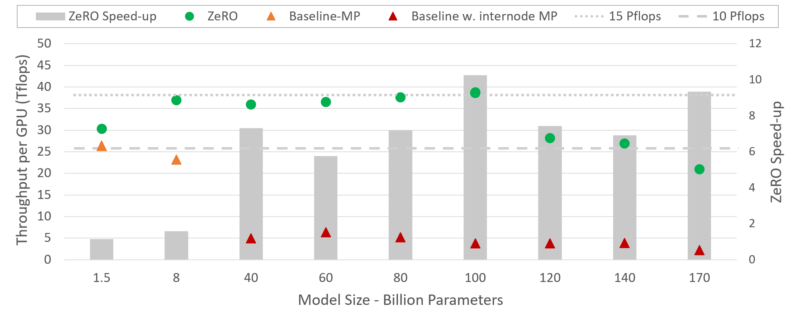
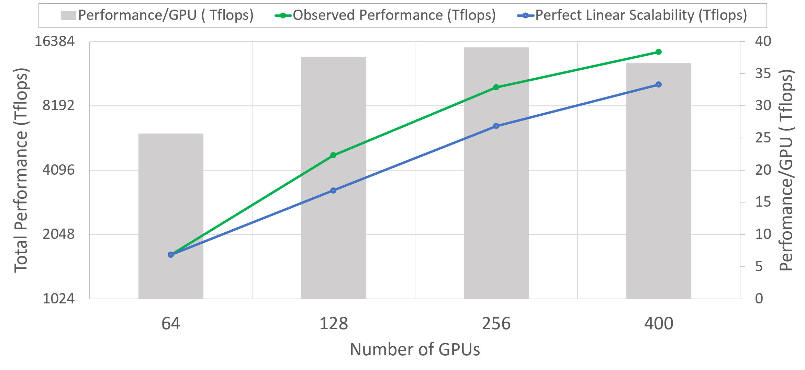

原文：https://arxiv.org/html/1910.02054v3（英文，arXiv 论文） 精读日期：2026-10-27 ｜ 主题：训练核心流程 × 显存优化 ｜ ⭐⭐⭐⭐⭐
ZeRO 的核心不是某个新算子，而是一次显存记账方式的改变：数据并行里被复制 Nd 份的模型状态，切开分摊后单卡显存随卡数线性下降，通信量几乎不涨。400 张 V100 上训出 170B 模型、平均 15 Petaflops，60B 模型 64 卡扩到 400 卡出现超线性加速。
1.5B参数的GPT-2, 权重以16位精度存储只要3GB, 却连32GB显存的单卡都训不动。差距不在权重本身, 而在训练过程中必须同时驻留的优化器状态、梯度与残余显存。
ZeRO的回答是零冗余: 数据并行里每个进程都复制全套模型状态, 这种复制在数学上完全没有必要。把模型状态切开分摊, 再按层在需要时才把参数聚拢回来, 显存占用随卡数线性下降, 通信量几乎不涨。
训练时的显存大头是模型状态, 即优化器状态、梯度与参数。Adam要为每个参数存动量与方差两份统计量; 混合精度训练下参数与梯度用16位存储, 各占2Ψ, 优化器另存一份32位参数与动量、方差, 各占4Ψ。记优化器状态倍数为K, 混合精度Adam的K等于12, 模型状态总计2Ψ+2Ψ+KΨ=16Ψ。GPT-2 1.5B因此至少需要24GB, 远高于权重本身的3GB。
剩余部分统称残余状态, 包括激活、临时缓冲与碎片。Transformer激活量约等于层数乘隐藏维度乘序列长度乘批量再乘12; 1.5B的GPT-2在序列长度1K、批量32时激活约60GB, 激活检查点以33% 重算为代价把激活压到约8GB。100B量级的模型即使开检查点, 激活仍要约60GB。
临时缓冲同样不可忽视: 梯度all-reduce、梯度范数计算常把全部梯度拼成一块连续缓冲以换带宽, 1.5B模型的32位融合缓冲就要6GB。碎片则是另一种失效: 空闲总量够、连续块不够时分配照样失败, 极端情况下30% 以上的显存空闲仍会报显存不足。
既有并行方式都没有同时解决这两类显存。数据并行复制全套模型状态, 显存不随卡数下降; 模型并行把模型状态切开, 但层间通信细碎, 跨节点后效率迅速下滑, 40B模型在两台DGX-2上用Megatron-LM实测单卡只有约5 TFlops, 不到硬件峰值的5%; 流水线并行则要靠大气泡换效率, 还会受权重绑定、批归一化与大批量收敛的牵制。ZeRO的切入点是: 保留数据并行的计算粒度与通信效率, 只把其中的冗余切掉。
ZeRO-DP立足三点洞察: 数据并行的计算粒度粗、通信量低, 扩展性本来就优于模型并行; 数据并行的问题只是模型状态被重复存了Nd份; 而模型状态并非全程都需要, 每层参数只在该层前向与反向时才用得上。切分模型状态、按需聚拢, 就能在数据并行效率不变的前提下拿到模型并行的显存效率。

图1: 模型状态显存对比, 三级切分把7.5B模型单卡显存从120GB压到1.9GB
数据并行度记为Nd, 优化器状态均分Nd份, 第i个进程只存、只更新第i份, 步末做一次all-gather收集更新后的全量参数。显存从4Ψ+KΨ 降到4Ψ+KΨ/Nd; 7.5B模型在64卡下从120GB降到31.4GB; Nd足够大时趋近4Ψ, 约为原来的四分之一。
每个进程只更新自己那份参数, 也就只需要对应参数的约化梯度; 每层梯度一产生就只向负责该参数的进程做reduce, 用完即释放, 实质是一次reduce-scatter。工程上按分区把梯度分桶整批约化, 既降显存又重叠通信与计算。显存进一步降到2Ψ+14Ψ/Nd, 7.5B模型在64卡下只要16.6GB, 大Nd下约为原来的八分之一。
参数同样只存自己那份; 前向、反向算到某层时, 由负责该分区的进程把权重广播给所有进程, 用完即丢, 不长期驻留。显存降到16Ψ/Nd, 7.5B模型在64卡下只要1.9GB; 只要卡数够, 任意规模的模型都能装下。
三级切分分别把单卡模型状态显存压到原来的1/4、1/8、1/Nd; 64卡下Pos、Pos+g、Pos+g+p分别能训7.5B、14B、128B参数的模型, 1024卡全开能装下1T参数; 而不做切分的数据并行在32GB显存卡上连1.5B以上的模型都装不下。下表单位均为GB。
| 数据并行度 | 7.5B Pos | 7.5B Pos+g | 7.5B Pos+g+p | 128B Pos | 128B Pos+g | 128B Pos+g+p | 1T Pos | 1T Pos+g | 1T Pos+g+p |
|---|---|---|---|---|---|---|---|---|---|
| 1 | 120 | 120 | 120 | 2048 | 2048 | 2048 | 16000 | 16000 | 16000 |
| 4 | 52.5 | 41.3 | 30 | 896 | 704 | 512 | 7000 | 5500 | 4000 |
| 16 | 35.6 | 21.6 | 7.5 | 608 | 368 | 128 | 4750 | 2875 | 1000 |
| 64 | 31.4 | 16.6 | 1.88 | 536 | 284 | 32 | 4187 | 2218 | 250 |
| 256 | 30.4 | 15.4 | 0.47 | 518 | 263 | 8 | 4046 | 2054 | 62.5 |
| 1024 | 30.1 | 15.1 | 0.12 | 513 | 257 | 2 | 4011 | 2013 | 15.6 |
模型状态压下去之后, 激活、临时缓冲与碎片会成为第二道瓶颈, ZeRO-R分别处理三者。
模型并行切参数时常要求每张卡都持有完整激活, 激活反而被复制; ZeRO把激活检查点也按模型并行度切开, 只在反向重算前用all-gather临时拼回一层。100B模型在批量32、序列长度1024、模型并行度16时, 单层检查点存量从约33GB降到约2GB; 极端情况下还能把分区后的检查点卸载到CPU, 激活显存趋近于零。
融合缓冲越大带宽效率越高, 但尺寸随模型线性膨胀, 3B模型的32位融合缓冲就要12GB。ZeRO-R改用定长融合缓冲: 尺寸与模型无关, 又足够大到保住带宽效率。
碎片来自长短寿命张量交错: 前向里检查点长寿、重算激活短寿, 反向里参数梯度长寿、激活梯度短寿。ZeRO-R预分配连续内存块, 激活检查点与梯度一产生就拷贝进预分配区, 碎片不再累积, 分配器找连续块的时间也随之下降。
基线数据并行每步通信2Ψ: 梯度all-reduce拆成reduce-scatter与all-gather, 各占 Ψ。
Pos+g不增加通信: 梯度只做一次scatter-reduce, 占 Ψ, 步末all-gather更新后的参数, 占 Ψ, 合计仍为2Ψ。
Pos+g+p把参数all-gather摊到整个前向与反向: 每层算前广播权重、用完即丢, 前向一次 Ψ、反向一次 Ψ, 加上梯度reduce-scatter的 Ψ, 合计3Ψ, 为基线的1.5倍, 换来显存随Nd线性下降。
ZeRO-R的Pa每层检查点多一次all-gather, 规模为序列长度乘隐藏维度, 不到模型并行原有通信量的10%; 作为回报, 激活显存按模型并行度下降, 批量可以等比放大, 数据并行通信量随批量增大而反比下降, 甚至能抵消一个量级; Pa+cpu则以2倍CPU数据搬运为代价把激活显存压到近零, 只在批量实在提不上去时才划算。
算上全部优化, 1T参数模型用Adam做16位训练要约16TB模型状态显存, 1024卡纯数据并行分摊后每卡16GB, 在32GB卡的合理范围内; 也可以16路模型并行锁在DGX-2节点内、64路数据并行跨节点, 同样装下1T参数。万亿参数从装不下变成装得下, 是ZeRO交出的核心结论。
装得下不等于训得完。BERT-Large在1024卡DGX-2H集群上67分钟训完, 1T模型单样本计算量约为其3000倍, 按同样本数与序列长度估算也要140天, 样本与序列长度随模型增大还会继续推高, 实际可能超过一年, 需要exa-flop量级的系统才谈得上在合理时间内训完。

图4: ZeRO-DP在各最大模型配置下的吞吐
| 模型并行度 | GPU数 | 基线(理论) | Pos(理论) | Pos+g(理论) | Pos+g+p(理论) | 基线(实测) | ZeRO-DP(Pos)(实测) |
|---|---|---|---|---|---|---|---|
| 1 | 64 | 2B | 7.6B | 14.4B | 128B | 1.3B | 6.2B |
| 2 | 128 | 4B | 15.2B | 28.8B | 256B | 2.5B | 12.5B |
| 4 | 256 | 8B | 30.4B | 57.6B | 0.5T | 5B | 25B |
| 8 | 512 | 16B | 60.8B | 115.2B | 1T | 10B | 50B |
| 16 | 1024 | 32B | 121.6B | 230.4B | 2T | 20B | 100B |
落地版本ZeRO-100B取Pos+g加ZeRO-R, 在PyTorch里实现, 兼容任意torch.nn.Module, 模型零改动即可套用, 也能与Megatron-LM的模型并行叠加。实验在400张V100、25台DGX-2、节点间800Gbps上进行, 无模型并行时对标PyTorch DDP, 有模型并行时对标Megatron-LM; 模型均为GPT-2式Transformer, 靠隐藏维度与层数调出不同规模。
ZeRO-100B在400卡上高效跑起170B模型, 比只用Megatron-LM高出8倍以上; 8B到100B模型平均单卡超38 TFlops, 合计超15 Petaflops, 约为峰值的30% 以上; 基线模型并行跨节点后链路带宽从单机NVSwitch的300GB/s跌到Infiniband EDR的12.5GB/s, 性能随规模迅速下滑, ZeRO-100B对基线的加速最高达到10倍。100B之后性能略降, 原因是显存不够跑更大批量, 随卡数增加有望缓解。

图2: 不同模型规模下ZeRO的单卡吞吐与相对基线的加速比
60B模型从64卡扩到400卡, 性能增速超过卡数增速。机制在于Pos+g让单卡模型状态显存随数据并行度下降, 省出的显存可以跑更大批量, 算术强度随之提升; 只要批量仍在收敛友好的区间内, 这种超线性就可持续。

图3: 60B模型从64卡扩到400卡的超线性扩展与单卡吞吐
ZeRO的核心不是某个新算子, 而是一次显存记账方式的改变: 数据并行里被复制Nd份的模型状态, 在时间上并非同时需要, 在空间上也不必同时驻留。按需聚拢、按层丢弃, 就把显存从固定成本变成了随卡数摊薄的成本, 而通信账单只多了50%。
这套方法后来随DeepSpeed开源, 成为大模型训练的默认底座之一; Pos+g+p指向的万亿参数当时受限于算力而非显存, 系统侧的路已经铺好, 剩下的瓶颈交给了硬件与时间。